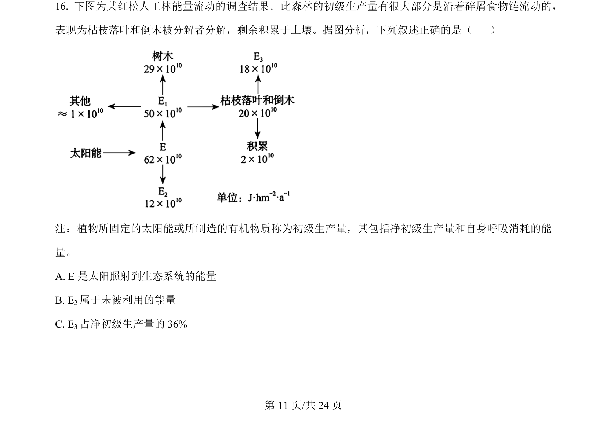
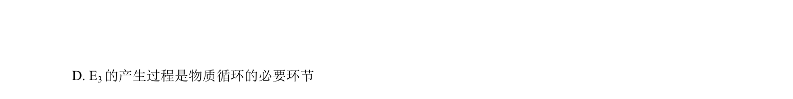
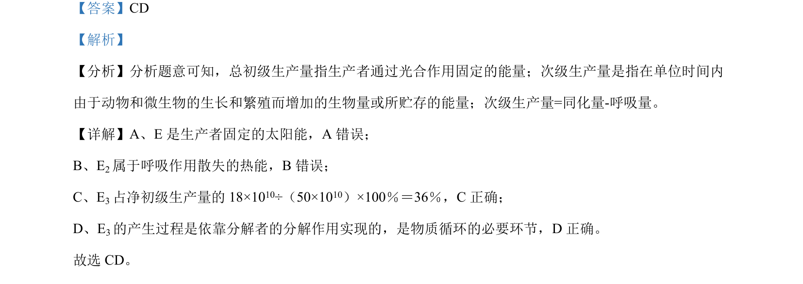

考点：能量流动 初级生产量 净初级生产量 呼吸消耗


红松人工林能量流动调查，分析初级生产量、净初级生产量和能量去向。

📄 原 PDF 第 11 页：
素材/真题/吉林/2008-2024·（吉林）生物高考真题/2024年高考生物试卷（辽宁）（解析卷）.pdf
注：植物所固定的太阳能或所制造的有机物质称为初级生产量，其包括净初级生产量和自身呼吸消耗的能 量。 A. E 是太阳照射到生态系统的能量 B. E2属于未被利用的能量 C. E3占净初级生产量的 36%